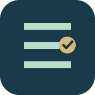
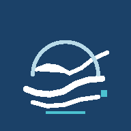
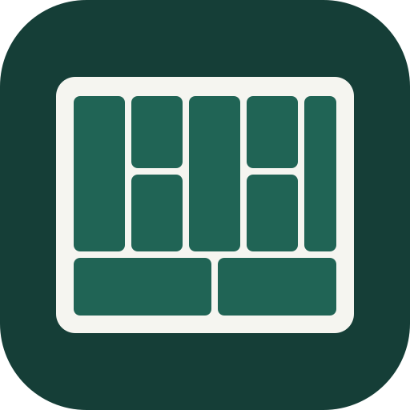
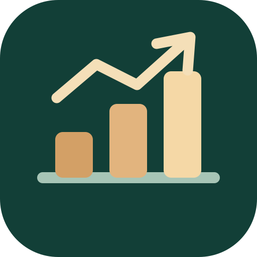
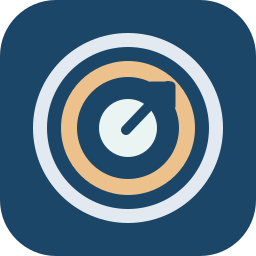
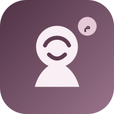
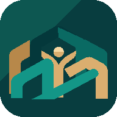
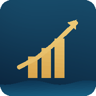

OKR
Turn strategic priorities into objectives, measurable key results and a consistent review rhythm.
Digital portfolio · Application hub
Explore applied tools for management, leadership, talent and client experience. Each product opens independently, with its own installation and data arrangements.
DIGITAL CONSULTING PRODUCTS
Explore our independent digital tools, experience a practical starting point and connect the results to expert consulting when needed.
Turn strategic priorities into objectives, measurable key results and a consistent review rhythm.
Map your business concept across nine blocks, surface critical gaps and explore an initial 30/60/90-day roadmap.
A complete ten-stage guided journey from idea to first sales, finance, daily operations and growth.
21 available entries. Some are prototypes or private pilots.

Interactive requirements · local saveChoose training management capabilities, capture open requirements, define technology and budget, and export a proposal-ready scope.
Talent Relationship Management pilot with role priorities, EVP, sourcing and candidate follow-up.

Client-specific appAlign goals, key results, performance indicators and review cycles.

Full appBuild and export a personalized nine-block business model.

Full appTen guided stages, practical choices, a ninety-day plan and export.

Service guideIndependent service guide. The general-purpose OKR application is not yet available.
Competency-based practice, role play and cases for managers and supervisors.
A guided leadership-learning experience and reflection studio.
Communication practice for branch managers with cases and guided dialogue.

Client experience pilotClient-facing experience for services, appointment requests and aftercare information.
A personal-growth experience with guided journeys and life management.
 Organizational experience
Organizational experienceA workplace learning experience for culture and behavioral practice.
One convenient gateway to the independent apps and professional website. No shared account or data access.

Early prototypeA modular personal-life organization experiment.

Private beta · sign-inPrivate-beta financial app; requires a separate account.
Branch-management practice workspace for the Alborz program.
Practical branch employee performance management tools.
Reflection, work cases and role rehearsal in a dedicated leadership studio.
A bilingual jewelry storefront and client-experience design preview.
International industrial sourcing and procurement presence.
A guided reflective leadership journey with applied practice.
Important: this directory is a launcher, not a shared-data platform. Open-source demo content is not a substitute for secure production hosting.
FROM PRODUCT TO PARTNERSHIP
Start from the business problem, then shape the right experience and delivery model.